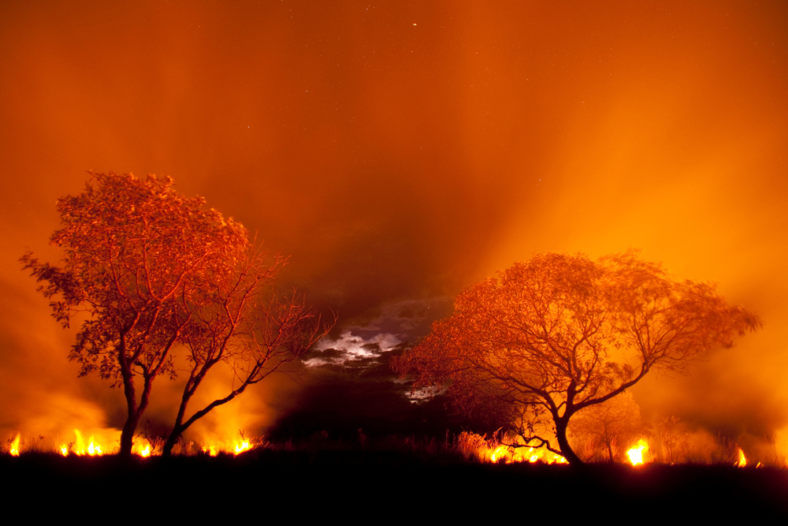
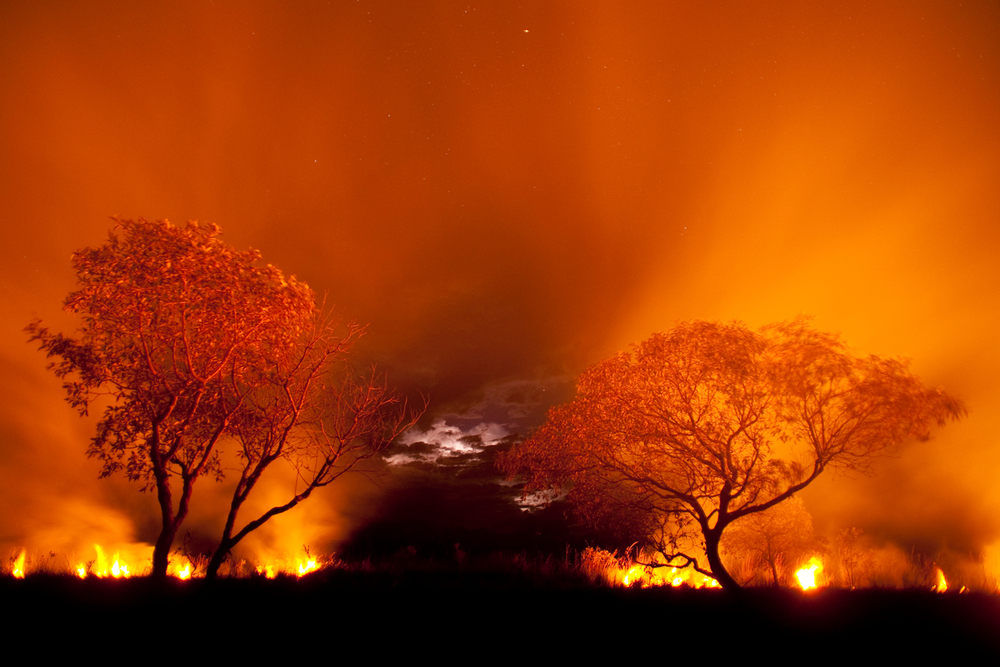
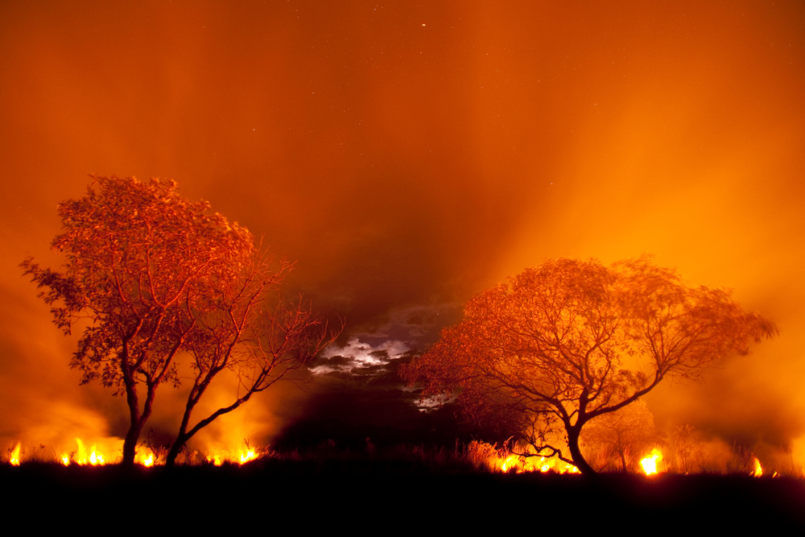

IMAGENS DAS QUEIMADAS

 



De acordo com: Mundo educação
As queimadas e o desmatamento são práticas comumente interligadas, pois realiza-se o desmatamento de áreas, para formação de pastagens, e faz-se a queimada, na tentativa de adubagem e preparo do solo para formação dos pastos. Essas práticas geram resultados nocivos à saúde humana e perda da biodiversidade animal e vegetal da Terra.
